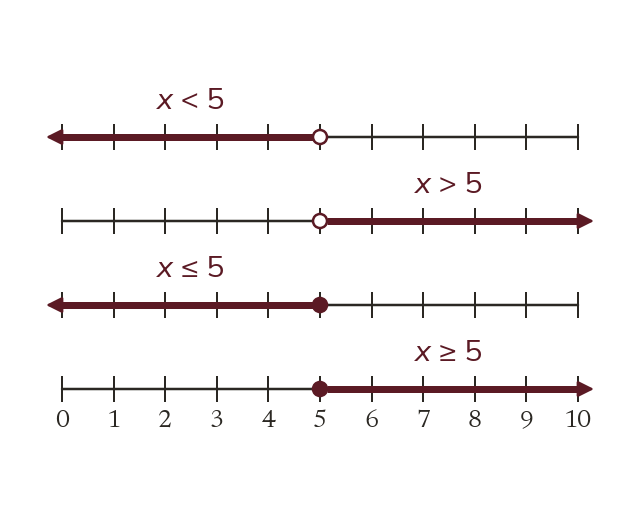

The four symbols
< less than, > greater than. ≤ less than or equal to, ≥ greater than or equal to. Each describes a range: x < 5 means every number below 5.
< means less than, > means greater than, ≤ means less than or equal to, ≥ means greater than or equal to. Each symbol describes a whole range of values, not a single one - x < 5 means every number below 5, not just one number.